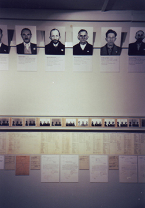

"Vom Antlitz Zur Maske", 1999.

Wien, Weimar, Buchenwald 1939 and
Gezeichneter Ort, Goetheblick auf Weimar und Buchenwald.
One Project, two exhibitions "From Countenance to Mask" and "A drawn place" both have exchanged locations: Goethe's Drawings and valuables of Classical Weimar were exhibited in the Buchenwald Memorial, Wax masks of concentration camp inmates were shown in Schiller Museum in Weimar. A Curatorial cooperation between Dani Karavan, Konrad Scheurmann and Naomi Tereza Salmon

The Exhibition double Catalogue is available: Vom Antlitz zur Maske. Wien - Weimar - Buchenwald. Gezeichneter Ort. Goetheblicke auf Weimar und Thüringen. Edited by Volkhard Knigge and Jürgen Seifert. Gestaltung: Hinz & Kunst; Weimar, 1999; ISBN: 3-935598-00-9
Close Window
All content copyright 2006 Naomi Tereza Salmon - all rights reserved